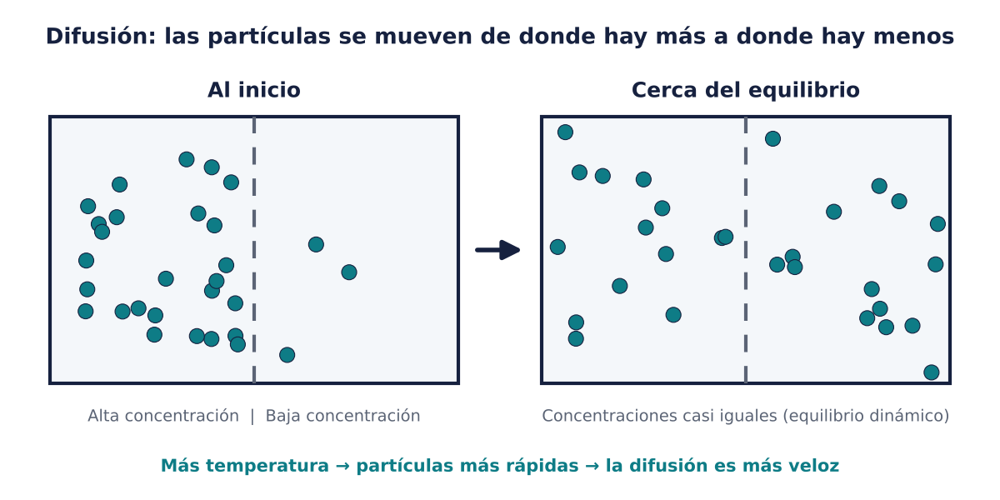
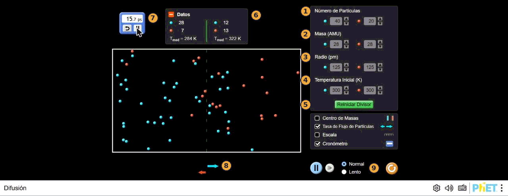
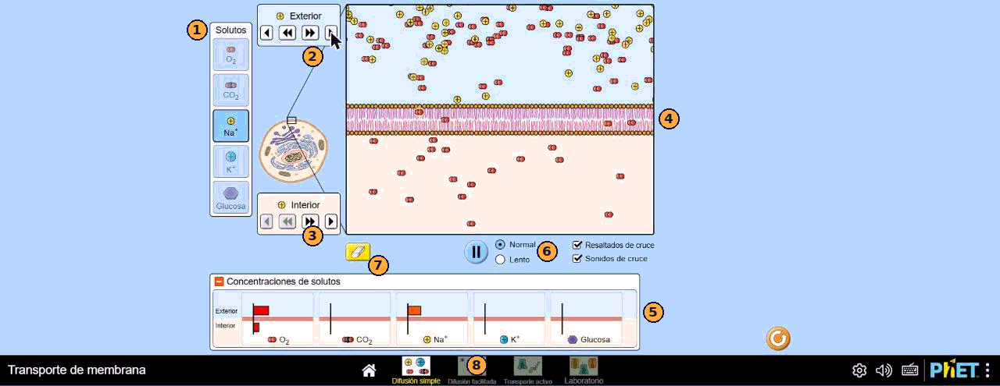
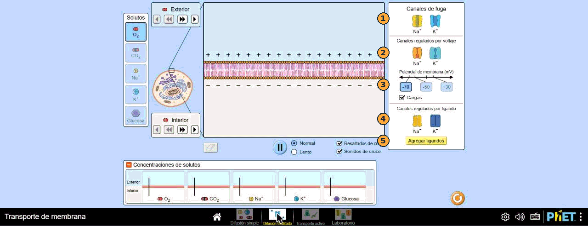
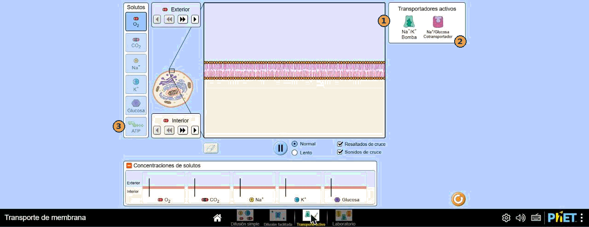

Objetivo y competencias
Objetivo: analizar qué factores cambian la velocidad de la difusión y cómo cruzan las sustancias una membrana (difusión simple, facilitada y transporte activo), con los simuladores Difusión y Transporte de membrana de PhET.
Tiempo: 2 horas 30 minutos. Trabajo: en parejas.
Materiales: computador o celular con internet, cuaderno de laboratorio y reloj o cronómetro.
| Saber | Hacer | Ser |
|---|---|---|
| Define difusión, gradiente, equilibrio dinámico y distingue los tipos de transporte. | Cuenta partículas, controla una variable a la vez y clasifica el transporte de cada sustancia. | Valora la importancia del transporte de sustancias para la vida de la célula. |
Para entender: la difusión

La difusión es el movimiento espontáneo de partículas desde una zona de mayor concentración hacia una de menor concentración. Ocurre porque las partículas de gases y líquidos están en movimiento constante y chocan entre sí al azar. El resultado es que, con el tiempo, se reparten de forma uniforme.

Cuando las concentraciones se igualan, las partículas siguen moviéndose, pero ya no hay un movimiento neto: es un equilibrio dinámico. Por cada partícula que pasa a la derecha, otra pasa a la izquierda.
¿Qué hace que la difusión sea más rápida o más lenta?
| Factor | Efecto sobre la velocidad | Explicación |
|---|---|---|
| Temperatura | A mayor temperatura, mayor velocidad | Las partículas tienen más energía y se mueven más rápido. |
| Masa de las partículas | A mayor masa, menor velocidad | Las partículas pesadas se mueven más lento a la misma temperatura. |
| Tamaño (radio) | A mayor radio, más choques y menor avance | Las partículas grandes chocan más y se estorban. |
| Diferencia de concentración | A mayor diferencia, más partículas cruzan al comienzo | El flujo neto es mayor cuando el gradiente es grande. |
En la vida real: el olor de un perfume que se percibe en todo el cuarto, el azúcar que se disuelve en el tinto sin agitar, el oxígeno que pasa del aire de los alvéolos a la sangre, y los nutrientes que entran a una célula. En una cuadra del pueblo, el olor del pescado frito se difunde por el aire hasta la casa del vecino.
Errores frecuentes: (1) pensar que en el equilibrio todo se detiene; (2) creer que las partículas «quieren» ir a la zona de menor concentración (se mueven al azar, el resultado neto es hacia donde hay menos); (3) confundir difusión (partículas de soluto) con ósmosis (agua).
Conoce la herramienta: PhET Difusión
Abrir en una pestaña nueva: Simulación Difusión (PhET) (úsalo si el simulador incrustado no carga o si trabajas desde el celular).

| N.º | Control | Para qué sirve |
|---|---|---|
| 1 | Número de partículas | Cantidad de partículas azules (columna izquierda) y rojas (columna derecha). Empiezan en 0 y cada clic en ▲ agrega 10 (en la captura se agregaron 40 azules y 20 rojas). |
| 2 | Masa (AMU) | Masa de cada tipo de partícula; ambas empiezan en 28. Cada clic en ▲ o ▼ cambia 1 AMU. |
| 3 | Radio (pm) | Tamaño de cada tipo de partícula; ambas empiezan en 125 pm. Cada clic cambia 5 pm. |
| 4 | Temperatura inicial (K) | Temperatura inicial de cada tipo; ambas empiezan en 300 K. Cada clic cambia 50 K. |
| 5 | Eliminar divisor | Quita la pared central (línea verde) para que las partículas se mezclen. Después el botón pasa a llamarse «Reiniciar divisor» y vuelve a poner la pared. |
| 6 | Panel Datos | Empieza cerrado: pulsa el signo + para abrirlo. Cuenta cuántas partículas de cada color hay a la izquierda y a la derecha, y la temperatura media (Tmed) de cada lado. |
| 7 | Cronómetro | Se muestra al marcar la casilla Cronómetro. Mide el tiempo en picosegundos (ps); el botón ⏸ lo detiene y ↺ lo reinicia. |
| 8 | Flechas de flujo | Aparecen al marcar la casilla Tasa de Flujo de Partículas y muestran el sentido y la rapidez del paso de cada tipo de partícula. |
| 9 | Controles de tiempo | Pausa, paso a paso, velocidad Normal o Lenta y reinicio de toda la simulación (⟲ naranja). |
Casillas útiles (todas empiezan sin marcar): Centro de Masas (marca el punto medio de cada tipo de partícula), Tasa de Flujo de Partículas, Escala (regla en la caja) y Cronómetro. Las partículas azules empiezan en el lado izquierdo y las rojas en el derecho.
Simulación «Difusión»: PhET Interactive Simulations, Universidad de Colorado Boulder, licencia CC BY 4.0. Ver la página de la simulación
Predice antes de experimentar
Escribe en tu cuaderno tus respuestas antes de abrir la simulación:
Preguntas previas
- Si calientas el gas, ¿se difunde más rápido o más lento? ¿Por qué?
- Si las partículas son más pesadas, ¿cómo cambia la velocidad de difusión?
- Si las partículas son más grandes, ¿qué crees que pasa?
- ¿Qué pasará con el número de partículas de cada lado cuando pase mucho tiempo? ¿Se detendrán?
Actividad 1: difusión con los valores iniciales
Abrir en una pestaña nueva: Simulación Difusión (PhET) (úsalo si el simulador incrustado no carga o si trabajas desde el celular).
Meta: observar cómo se reparten las partículas hasta llegar al equilibrio.
- Abre la simulación (empieza con 0 partículas). Pulsa 4 veces ▲ en «Número de partículas» del punto azul (40 azules) y 2 veces ▲ en el punto rojo (20 rojas). Deja masa 28 AMU, radio 125 pm y temperatura 300 K. Marca la casilla Cronómetro y abre el panel Datos con el signo +.
- Pulsa Eliminar divisor para que las partículas se mezclen. Cuando el cronómetro marque cerca de 5 ps, 10 ps, 15 ps y 20 ps, pulsa pausa ⏸ y anota cuántas partículas azules y rojas hay en cada lado (panel Datos); luego pulsa ▶ de nuevo.
- Continúa hasta que los números dejen de cambiar de forma clara (equilibrio dinámico). Anota el tiempo aproximado.
Responde mientras trabajas
- ¿Cuántas partículas azules hay en cada lado en el equilibrio? ¿Y rojas? ¿Se reparten por igual?
- En equilibrio, ¿las partículas se detienen? ¿Cómo lo sabes?
- ¿Qué indican las flechas de flujo cuando el sistema ya está en equilibrio?
Tabla de registro
| Tiempo (ps) | Azules a la izquierda | Azules a la derecha | Rojas a la izquierda | Rojas a la derecha |
|---|---|---|---|---|
Actividad 2: ¿qué factor cambia la rapidez?
Meta: descubrir el efecto de la temperatura, la masa y el radio. Cambia una sola variable por intento y repite con el mismo tiempo de observación (por ejemplo, 10 ps).
- Cómo preparar cada intento: pulsa ↺ (reinicio naranja), agrega 40 azules y 20 rojas, cambia solo la variable indicada con las flechas antes de pulsar Eliminar divisor, y mira el cronómetro.
- Intento 1 (base): valores iniciales. Anota cuántas partículas azules hay en el lado derecho a los 10 ps.
- Intento 2 (temperatura): sube la temperatura inicial de las azules a 400 K (2 clics en ▲, cada clic suma 50 K).
- Intento 3 (masa): con la temperatura en 300 K, sube la masa de las azules a 48 AMU (20 clics en ▲).
- Intento 4 (radio): con la masa en 28 AMU, sube el radio de las azules a 175 pm (10 clics en ▲, cada clic suma 5 pm).
- Intento 5 (cantidad): deja los demás valores iniciales y agrega 100 azules (10 clics en ▲).
Responde mientras trabajas
- ¿Qué variable aumentó más la rapidez de difusión? ¿Cuál la redujo?
- ¿Por qué es importante cambiar solo una variable cada vez?
- ¿Coincidieron tus resultados con lo que predijiste? Explica.
Tabla de registro
| Intento | Variable cambiada y valor | Azules en el lado derecho a los 10 ps | ¿Más rápido o más lento que la base? |
|---|---|---|---|
Simulación Difusión incrustada
Simulación «Difusión»: PhET Interactive Simulations, Universidad de Colorado Boulder, licencia CC BY 4.0. Ver la página de la simulación
Conoce la herramienta: PhET Transporte de membrana
Abrir en una pestaña nueva: Simulación Transporte de membrana (PhET) (úsalo si el simulador incrustado no carga o si trabajas desde el celular). La simulación tiene cuatro pantallas en la barra inferior: Difusión simple, Difusión facilitada, Transporte activo y Laboratorio.
Pantalla 1: Difusión simple

| N.º | Control | Para qué sirve |
|---|---|---|
| 1 | Solutos | Elige el soluto con el que trabajas: O2, CO2, Na+, K+ o glucosa. |
| 2 | Botones «Exterior» | Con las flechas agregas o quitas partículas del soluto elegido en el lado de afuera de la célula (de una en una o de varias). |
| 3 | Botones «Interior» | Hacen lo mismo en el lado de adentro de la célula. |
| 4 | Membrana | Doble capa de fosfolípidos que separa el exterior (arriba) del interior (abajo). |
| 5 | Concentraciones de solutos | Cinco gráficos (uno por soluto) con una barra para el exterior y otra para el interior: muestran en tiempo real cómo cambia la concentración. |
| 6 | Controles | Pausa, velocidad Normal o Lenta, y casillas Resultados de cruce y Sonidos de cruce. |
| 7 | Borrador | Borra las partículas que agregaste para empezar de nuevo. |
| 8 | Pantallas | Barra inferior: Difusión simple, Difusión facilitada, Transporte activo y Laboratorio. |
Pantalla 2: Difusión facilitada

| N.º | Control | Para qué sirve |
|---|---|---|
| 1 | Canales de fuga | Canales de Na+ y de K+ que están siempre abiertos. Arrástralos a la membrana. |
| 2 | Canales regulados por voltaje | Canales de Na+ y K+ que se abren o cierran según el potencial de membrana. |
| 3 | Potencial de membrana (mV) | Botones −70, −50 y +30 mV. Con la casilla Cargas ves las cargas + afuera y − adentro. |
| 4 | Canales regulados por ligando | Canales de Na+ y K+ que se abren cuando llegan ligandos (moléculas señal). |
| 5 | Agregar ligandos | Suelta ligandos en el exterior para abrir los canales regulados por ligando. |
Pantalla 3: Transporte activo

| N.º | Control | Para qué sirve |
|---|---|---|
| 1 | Bomba Na+/K+ | Transportador que mueve iones en contra de su gradiente y gasta ATP. |
| 2 | Cotransportador Na+/glucosa | Transportador que mete glucosa a la célula aprovechando el paso de Na+ a favor de su gradiente. |
| 3 | ATP | Selecciona ATP en la lista de solutos y agrégalo adentro de la célula para dar energía a la bomba. |
Pantalla 4: Laboratorio
Reúne en una sola pantalla todos los canales y transportadores de las tres pantallas anteriores y los cinco solutos más el ATP. Sirve para probar combinaciones y diseñar tus propios experimentos.
Simulación «Transporte de membrana»: PhET Interactive Simulations, Universidad de Colorado Boulder, licencia CC BY 4.0. Ver la página de la simulación
Actividad 3: ¿cómo cruza cada sustancia?
Abrir en una pestaña nueva: Simulación Transporte de membrana (PhET) (úsalo si el simulador incrustado no carga o si trabajas desde el celular).
Meta: clasificar el transporte de cada sustancia.
- Entra a Difusión simple. Elige O2 y agrega varias partículas solo en el Exterior con las flechas. Observa si cruzan la membrana y mira cómo cambian las barras de concentración. Pausa y anota.
- Repite con CO2, Na+, K+ y glucosa. En cada caso anota si cruzan y qué pasa con las barras.
- Entra a Difusión facilitada. Arrastra a la membrana un canal de fuga de Na+ y agrega Na+ en el exterior. Observa. Repite con el canal de K+ y K+.
- Prueba los canales regulados por voltaje cambiando el potencial de membrana (−70, −50 y +30 mV). Con ligandos: agrégalos con Agregar ligandos y mira qué canales se abren.
- Entra a Transporte activo. Agrega Na+ y K+, pon una bomba Na+/K+ y agrega ATP adentro de la célula. Mira hacia dónde se mueven los iones y qué pasa con las barras.
- Prueba el cotransportador Na+/glucosa con glucosa en el exterior.
Responde mientras trabajas
- ¿Qué sustancias cruzan la membrana sin ayuda? ¿Cuáles no? ¿Qué características tienen unas y otras?
- ¿Qué pasa con las barras de concentración cuando el transporte es pasivo (hacia el equilibrio)?
- En el transporte activo, ¿las barras tienden a igualarse o a separarse? ¿Qué se necesita para lograrlo?
- ¿Qué ocurre con la bomba cuando no hay ATP?
Este simulador muestra el movimiento de las sustancias disueltas, no el del agua. El movimiento del agua (ósmosis) lo trabajamos en la Práctica 5.
Tabla de registro
| Sustancia | ¿Cruza sola? (pantalla 1) | ¿Necesita canal? (pantalla 2) | ¿Necesita bomba y ATP? (pantalla 3) | Tipo de transporte |
|---|---|---|---|---|
| O₂ | ||||
| CO₂ | ||||
| Na⁺ | ||||
| K⁺ | ||||
| Glucosa |
Simulación Transporte de membrana incrustada
Simulación «Transporte de membrana»: PhET Interactive Simulations, Universidad de Colorado Boulder, licencia CC BY 4.0. Ver la página de la simulación
Analiza y resuelve
Preguntas de análisis
- ¿Qué efecto tiene la temperatura en la velocidad de difusión? Explica con tus datos de la Actividad 2.
- ¿Qué significa equilibrio dinámico? ¿Qué evidencia viste en la simulación de que las partículas no se detienen?
- Explica con tus palabras la diferencia entre difusión simple, difusión facilitada y transporte activo, con un ejemplo de cada una tomado del simulador.
- ¿Por qué la bomba de sodio y potasio necesita ATP, mientras que los canales de fuga no?
- Una célula tiene mucho K+ adentro y poco afuera. ¿Hacia dónde saldrá el K+ si se abre un canal? ¿Y si se quiere meter más K+? ¿Qué se necesita?
- Explica por qué el oxígeno puede entrar a una célula por difusión simple, pero la glucosa necesita un transportador.
- Compara tus predicciones con lo que viste. ¿Qué ideas tuviste que corregir?
- A mayor temperatura, las partículas se mueven más rápido y la difusión es más veloz.
- Es el estado en que las concentraciones se igualan pero las partículas siguen moviéndose; pasan tantas en un sentido como en el otro. Se ve en que los números oscilan y las flechas de flujo siguen apareciendo.
- Simple: pasa directamente a favor del gradiente (O2, CO2). Facilitada: a favor del gradiente con una proteína canal (iones). Activa: en contra del gradiente con una bomba y gasto de ATP (bomba Na+/K+).
- Los canales de fuga dejan pasar iones a favor del gradiente; la bomba los mueve en contra del gradiente, lo que requiere energía.
- El K+ sale por el canal, a favor de su gradiente. Para meter más K+ hace falta una bomba con ATP.
- El O2 es pequeño y sin carga, y se disuelve en la capa de lípidos. La glucosa es grande y polar, y no atraviesa los lípidos sin la ayuda de una proteína.
- Respuesta personal: compara predicción y datos.
Verifica lo aprendido
Quiz de difusión y transporte
Ordena los pasos de la difusión simple de una gota de tinta en agua.
- La gota de tinta cae y queda muy concentrada en un punto
- Las partículas de tinta se mueven al azar y chocan con las del agua
- Las partículas se extienden hacia las zonas con menos tinta
- La concentración se hace casi igual en todo el vaso
- Hay equilibrio dinámico: las partículas siguen moviéndose, sin cambio neto
Cierra y reflexiona
Responde en tu cuaderno:
- ¿Qué fue lo que más te sorprendió de la difusión? ¿Por qué?
- Menciona un fenómeno de tu vida diaria que ocurra por difusión.
- ¿Qué diferencias viste entre trabajar con un simulador y hacer el experimento real con tinta en agua?